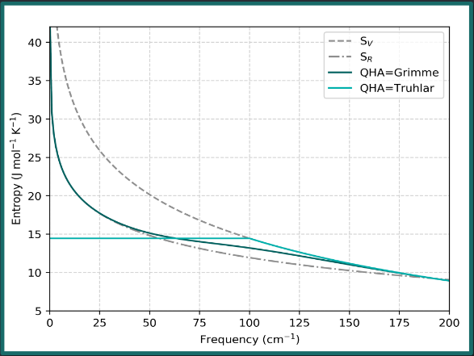
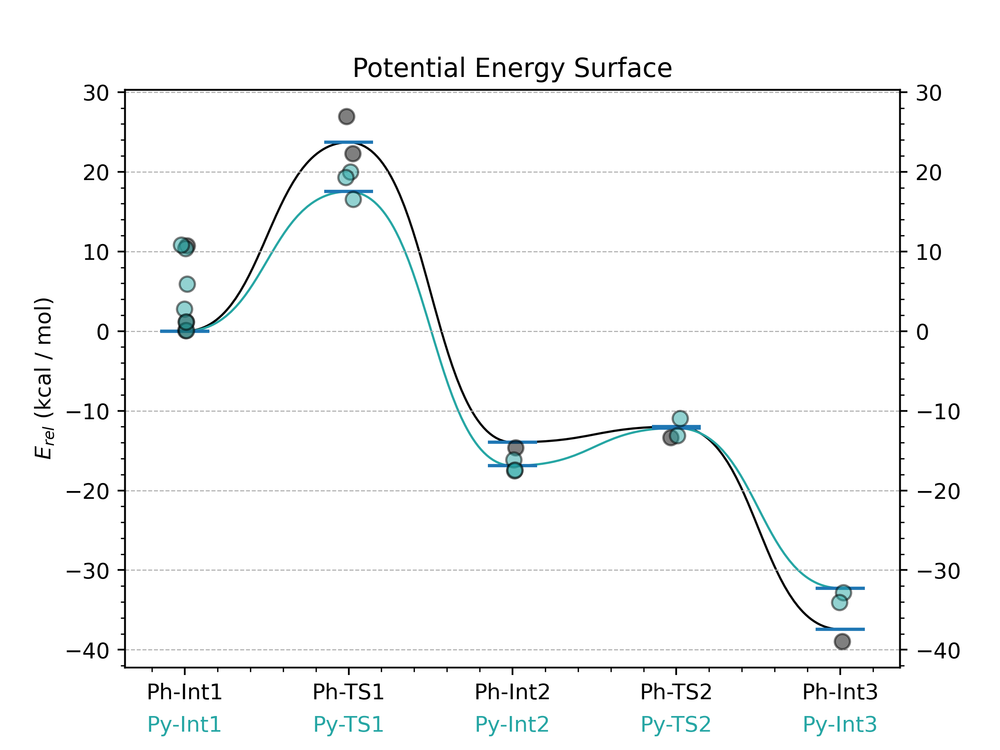

GoodVibes
Here is the GoodVibes GitHub Page
Here is the Article
Installation
Version 3.2 is most up to date. Install with:
pip install goodvibes
or
pip install --upgrade goodvibes
or
conda install -c conda-forge goodvibes
(you may also need to install matplotlib)
Computing Thermochemistry for QM Output Files
You can run this code using any output file from QM calculations.
python -m goodvibes H2O.log
You should get the following output:
o Requested:
Temperature = 298.15 Kelvin Pressure = 1 atm
All energetic values below shown in Hartree unless otherwise specified.
Using vibrational scale factor 1.0 for B97D/6-31G(d) level of theory
Entropic quasi-harmonic treatment: frequency cut-off value of 100.0 wavenumbers will be applied.
QS = Grimme: Using a mixture of RRHO and Free-rotor vibrational entropies.
REF: Grimme, S. Chem. Eur. J. 2012, 18, 9955-9964
Structure E ZPE H T.S T.qh-S G(T) qh-G(T)
********************************************************************************************************************************
o H2O -76.368128 0.020772 -76.343577 0.021458 0.021458 -76.365035 -76.365035
********************************************************************************************************************************
Grabs Energy, frequencies, and computes thermochemical values Enthalpy (H), Entropy (S), Gibbs Free Energy (G). Also computes quasi-harmonic corrected Entropy (qh-S) and Free Energy (qh-G).
Compute G as G = H - (T * S)
Temperature Corrections
The default temperature in GoodVibes is 298.15 K (25C)
What if the reaction was run at 100C?
python -m goodvibes benzene.log -t 373.15
This will give the following output:
o Requested: -t 373.15
Temperature = 373.15 Kelvin Pressure = 1 atm
All energetic values below shown in Hartree unless otherwise specified.
o Found vibrational scaling factor of 0.970 for M062X/def2TZVPP level of theory
Alecu, I. M.; Zheng, J.; Zhao, Y.; Truhlar, D. G. J. Chem. Theory Comput. 2010, 6, 2872-2887.
Entropic quasi-harmonic treatment: frequency cut-off value of 100.0 wavenumbers will be applied.
QS = Grimme: Using a mixture of RRHO and Free-rotor vibrational entropies.
REF: Grimme, S. Chem. Eur. J. 2012, 18, 9955-9964
Structure E ZPE H T.S T.qh-S G(T) qh-G(T)
********************************************************************************************************************************
o benzene -232.227201 0.098336 -232.120773 0.044154 0.044157 -232.164927 -232.164930
********************************************************************************************************************************
GoodVibes can also compute temperature ranges.
python -m goodvibes benzene.log H2O.log --ti 250,400,50
This will give the output:
o Requested: --ti 250,400,50
Pressure = 1 atm
All energetic values below shown in Hartree unless otherwise specified.
x Caution! Different levels of theory found:
-M062X/def2TZVPP: benzene.log
-B97D/6-31G(d): H2O.log
Using vibrational scale factor 1.0: differing levels of theory detected.
Entropic quasi-harmonic treatment: frequency cut-off value of 100.0 wavenumbers will be applied.
QS = Grimme: Using a mixture of RRHO and Free-rotor vibrational entropies.
REF: Grimme, S. Chem. Eur. J. 2012, 18, 9955-9964
Variable-Temperature analysis of the enthalpy, entropy and the entropy at a constant pressure between
T init: 250.0, T final: 400.0, T interval: 50.0
Structure Temp/K H T.S T.qh-S G(T) qh-G(T)
********************************************************************************************************************************
o benzene 250.0 -232.121841 0.026251 0.026253 -232.148091 -232.148094
o benzene 300.0 -232.120465 0.033001 0.033004 -232.153466 -232.153469
o benzene 350.0 -232.118802 0.040292 0.040294 -232.159094 -232.159097
o benzene 400.0 -232.116857 0.048122 0.048125 -232.164979 -232.164982
********************************************************************************************************************************
********************************************************************************************************************************
o H2O 250.0 -76.344188 0.017433 0.017433 -76.361622 -76.361622
o H2O 300.0 -76.343553 0.021615 0.021615 -76.365168 -76.365168
o H2O 350.0 -76.342915 0.025906 0.025906 -76.368821 -76.368821
o H2O 400.0 -76.342271 0.030294 0.030294 -76.372565 -76.372565
********************************************************************************************************************************
This computes the thermochemical values for both output files at temperatures ranging from 250K to 400K every 50K.
Quasi-Harmonic Corrections

The quasi-harmonic correction has a greater effect when molecules have a greater number of low-frequency vibrational modes. For example:
Methylaniline: 2 vibrational modes below 200 cm-1
Int-III: 23 vibrational modes below 200 cm-1
python -m goodvibes methylaniline.log Int-III.log
This gives the output:
o Requested:
Temperature = 298.15 Kelvin Pressure = 1 atm
All energetic values below shown in Hartree unless otherwise specified.
x Caution! Different levels of theory found:
-B97D/6-31G(d): methylaniline.log
-wB97XD/Gen: Int-III.log
Using vibrational scale factor 1.0: differing levels of theory detected.
Caution! Implicit solvation (SMD/CPCM) detected. Enthalpic and entropic terms cannot be safely separated. Use them at your own risk!
Entropic quasi-harmonic treatment: frequency cut-off value of 100.0 wavenumbers will be applied.
QS = Grimme: Using a mixture of RRHO and Free-rotor vibrational entropies.
REF: Grimme, S. Chem. Eur. J. 2012, 18, 9955-9964
Structure E ZPE H T.S T.qh-S G(T) qh-G(T)
********************************************************************************************************************************
o methylaniline -326.664901 0.142118 -326.514489 0.039668 0.039535 -326.554157 -326.554024
o Int-III -8986.063880 0.446831 -8985.583025 0.106167 0.095367 -8985.689192 -8985.678393
********************************************************************************************************************************
Single Point Calculations
Useful for saving on computational resources:
We can optimize molecules at a lower level of theory to still obtain an accurate geometry, but do a single point energy calculation (SPC) at a higher level of theory to obtain more accurate energy values.
With the --spc argument, we can specify how the SPC file names are formatted.
Calculation Type |
Filename |
|---|---|
opt/freq |
file.log |
SPC |
file_SPC.log |
For example: ethane.log and ethane_TZ.out
python -m goodvibes ethane.log --spc TZ
You will get the following output:
o Requested: --spc TZ
Temperature = 298.15 Kelvin Pressure = 1 atm
All energetic values below shown in Hartree unless otherwise specified.
o Found vibrational scaling factor of 0.977 for B3LYP/6-31G(d) level of theory
Alecu, I. M.; Zheng, J.; Zhao, Y.; Truhlar, D. G. J. Chem. Theory Comput. 2010, 6, 2872-2887.
Entropic quasi-harmonic treatment: frequency cut-off value of 100.0 wavenumbers will be applied.
QS = Grimme: Using a mixture of RRHO and Free-rotor vibrational entropies.
REF: Grimme, S. Chem. Eur. J. 2012, 18, 9955-9964
Combining final single point energy with thermal corrections.
Structure E_SPC E ZPE H_SPC T.S T.qh-S G(T)_SPC qh-G(T)_SPC
**********************************************************************************************************************************************
o ethane -79.858399 -79.830421 0.073508 -79.780448 0.027569 0.027570 -79.808017 -79.808019
**********************************************************************************************************************************************
Potential Energy Surface Calculations:
GoodVibes can compute relative energy/thermochemistry values to describe a reaction pathway with a potential energy surface
To do this, we need to write a yaml file with 3 sections:
- PES
Defines reaction pathway
Can add multiple pathways
- SPECIES
Relates files to each species in the reaction pathway
- FORMAT
Optional additional formatting
--- # PES
Ph: [Ph-Int1 , Ph-TS1 , Ph-Int2 , Ph-TS2 , Ph-Int3 ]
Py: [Py-Int1 , Py-TS1 , Py-Int2 , Py-TS2 , Py-Int3 ]
--- # SPECIES
Ph-Int1 : Int_I_Ph*
Ph-TS1 : TS_1_Ph*
Ph-Int2 : Int_II_Ph*
Ph-TS2 : TS_II_Ph*
Ph-Int3 : Int_III_Ph*
Py-Int1 : Int_I_Py*
Py-TS1 : TS_1_Py*
Py-Int2 : Int_II_Py*
Py-TS2 : TS_II_Py*
Py-Int3 : Int_III_Py*
--- # FORMAT
dec : 2
legend : False
color : black,#26a6a4
pointlabel : False
gridlines: True
show_conformers: True
show_gconf: False
title: Potential Energy Surface
Putting it All Together
Temperature adjustments
Single Point Calculations
Potential Energy Surface Calculations
We can use these 24 intermediate and transition state calculations + corresponding SPC files + yaml to define a reaction pathway
python -m goodvibes *.log -t 353.15 --spc DLPNO --imag --invertifreq -5 --pes PhPy.yaml
You will get the following as output:
o Requested: -t 353.15 --spc DLPNO --imag --invertifreq -5 --pes PhPy.yaml
Temperature = 353.15 Kelvin Pressure = 1 atm
All energetic values below shown in Hartree unless otherwise specified.
Using vibrational scale factor 1.0 for wB97XD/6-31+G(d) level of theory
Caution! Implicit solvation (SMD/CPCM) detected. Enthalpic and entropic terms cannot be safely separated. Use them at your own risk!
Entropic quasi-harmonic treatment: frequency cut-off value of 100.0 wavenumbers will be applied.
QS = Grimme: Using a mixture of RRHO and Free-rotor vibrational entropies.
REF: Grimme, S. Chem. Eur. J. 2012, 18, 9955-9964
Combining final single point energy with thermal corrections.
The following frequency was made positive and used in calculations: -2.8981 from Int_II_Py_b.log
Structure E_SPC E ZPE H_SPC T.S T.qh-S G(T)_SPC qh-G(T)_SPC im freq
*******************************************************************************************************************************************************
o Int_III_Ph_a -1414.272460 -1415.767800 0.418564 -1413.819815 0.105944 0.098578 -1413.925760 -1413.918394
o Int_III_Py_a -1414.269254 -1415.765251 0.418693 -1413.816478 0.106976 0.099078 -1413.923454 -1413.915556
o Int_III_Py_b -1414.270115 -1415.766283 0.417841 -1413.817909 0.107635 0.099479 -1413.925544 -1413.917389
o Int_II_Ph_a -1414.238513 -1415.730395 0.418574 -1413.786351 0.102570 0.096587 -1413.888921 -1413.882937
o Int_II_Py_a -1414.248486 -1415.739754 0.418595 -1413.796289 0.103963 0.097294 -1413.900253 -1413.893584
o Int_II_Py_b -1414.251141 -1415.742543 0.418183 -1413.799010 0.107432 0.098914 -1413.906442 -1413.897924
o Int_II_Py_c -1414.250426 -1415.740873 0.418274 -1413.798225 0.105693 0.098329 -1413.903918 -1413.896555
o Int_I_Ph_a -1414.219198 -1415.708399 0.419425 -1413.766680 0.100260 0.095322 -1413.866940 -1413.862002
o Int_I_Ph_b -1414.218356 -1415.706755 0.419581 -1413.765641 0.100615 0.095531 -1413.866255 -1413.861172
o Int_I_Ph_c -1414.203378 -1415.689310 0.418363 -1413.751447 0.103593 0.097115 -1413.855040 -1413.848561
o Int_I_Py_a -1414.223227 -1415.715045 0.419114 -1413.770810 0.101829 0.096167 -1413.872638 -1413.866977
o Int_I_Py_b -1414.223209 -1415.711031 0.419045 -1413.770901 0.100816 0.095725 -1413.871717 -1413.866626
o Int_I_Py_c -1414.211964 -1415.713255 0.418916 -1413.759687 0.101792 0.096060 -1413.861479 -1413.855747
o Int_I_Py_d -1414.213688 -1415.698106 0.418680 -1413.761526 0.102616 0.096491 -1413.864142 -1413.858017
o Int_I_Py_e -1414.212305 -1415.697383 0.418818 -1413.759995 0.103174 0.096642 -1413.863169 -1413.856637
o Int_I_Py_f -1414.220429 -1415.706212 0.419258 -1413.767919 0.101285 0.095753 -1413.869204 -1413.863672
o TS_1_Ph_a -1414.181410 -1415.670386 0.417010 -1413.731342 0.100555 0.095542 -1413.831896 -1413.826883 -523.12
o TS_1_Ph_b -1414.173224 -1415.661334 0.416101 -1413.723679 0.102811 0.096739 -1413.826490 -1413.820418 -456.04
o TS_1_Py_a -1414.194715 -1415.682140 0.417530 -1413.744164 0.100446 0.095392 -1413.844611 -1413.839556 -397.29
o TS_1_Py_b -1414.199208 -1415.686916 0.417186 -1413.748822 0.101458 0.096001 -1413.850280 -1413.844823 -437.02
o TS_1_Py_c -1414.192702 -1415.681170 0.416331 -1413.742779 0.103499 0.097006 -1413.846278 -1413.839786 -319.63
o TS_II_Ph_a -1414.231879 -1415.727262 0.417335 -1413.781405 0.101901 0.095931 -1413.883306 -1413.877336 -241.51
o TS_II_Py_a -1414.238504 -1415.734212 0.417525 -1413.787768 0.102732 0.096376 -1413.890500 -1413.884144 -200.84
o TS_II_Py_b -1414.235758 -1415.731725 0.418091 -1413.784725 0.101249 0.095630 -1413.885974 -1413.880355 -239.51
*******************************************************************************************************************************************************
Gconf correction requested to be applied to below relative values using quasi-harmonic Boltzmann factors
RXN: Ph (kcal/mol) DE_SPC DE DZPE DH_SPC T.DS T.qh-DS DG(T)_SPC qh-DG(T)_SPC
*******************************************************************************************************************************************************
o Ph-Int1 0.00 0.00 0.00 0.00 0.00 0.00 0.00 0.00
o Ph-TS1 23.56 23.54 -1.55 21.98 -0.31 -0.33 22.29 22.31
o Ph-Int2 -12.29 -14.14 -0.57 -12.55 0.94 0.31 -13.49 -12.86
o Ph-TS2 -8.13 -12.17 -1.34 -9.45 0.52 -0.10 -9.97 -9.35
o Ph-Int3 -33.59 -37.61 -0.57 -33.55 3.05 1.56 -36.61 -35.11
*******************************************************************************************************************************************************
RXN: Py (kcal/mol) DE_SPC DE DZPE DH_SPC T.DS T.qh-DS DG(T)_SPC qh-DG(T)_SPC
*******************************************************************************************************************************************************
o Py-Int1 0.00 0.00 0.00 0.00 0.00 0.00 0.00 0.00
o Py-TS1 15.08 16.52 -1.20 13.83 -0.43 -0.46 14.27 14.29
o Py-Int2 -17.45 -18.19 -0.55 -17.59 3.38 1.62 -20.97 -19.21
o Py-TS2 -9.59 -13.17 -0.97 -10.61 0.35 -0.22 -10.96 -10.39
o Py-Int3 -29.39 -33.24 -0.70 -29.44 3.60 1.91 -33.04 -31.35
*******************************************************************************************************************************************************
Graphing these potential energy surfaces is simple once the yaml file is created
python -m goodvibes *.log -t 353.15 --spc DLPNO --imag --invertifreq -5 --pes PhPy.yaml --graph PhPy.yaml

You can add more or less details by changing the FORMAT section of the yaml file. This is where you might tell GoodVibes you do not want to plot the different conformations of each structure, only the energies.
Check out other packages by the Paton lab @ our GitHub!